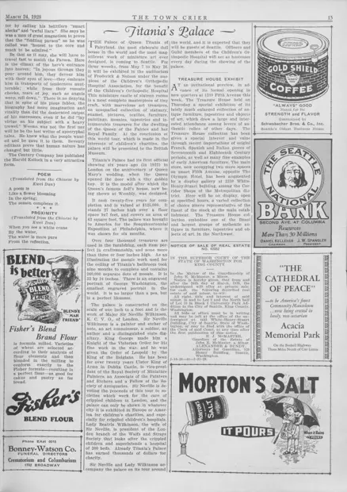

Poem / Proximity
访问原网页 ↗Visit original website ↗

S142 · Kwei Dun，译 / The Town Crier · 1928-03-24
同页刊两首分别题作 Poem、Proximity 的英译诗，均注明由 Kwei Dun 译自中文。两诗分别写春花与水边白鹤。Two short poems titled Poem and Proximity are each credited as translations from Chinese by Kwei Dun. They concern a spring flower and a white crane beside water.
馆藏图像与原文Archived images and documents

原始网址Original URL
https://cdm16118.contentdm.oclc.org/digital/collection/p16118coll23/id/16297